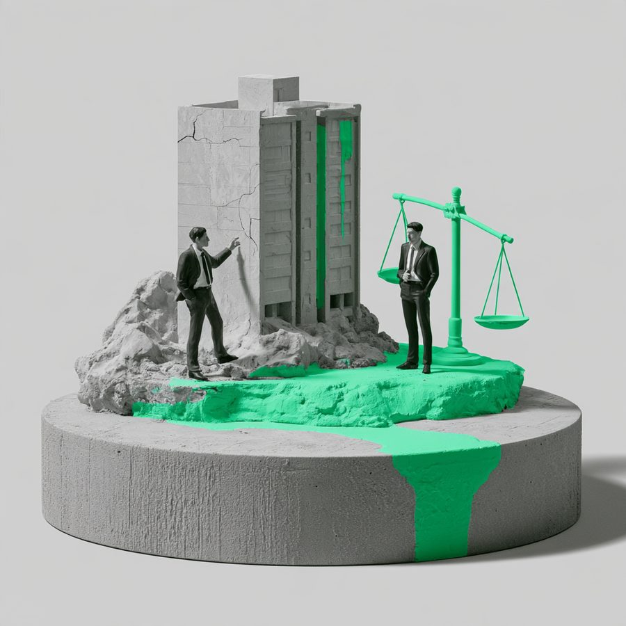

성공사례 목록
건물 하자로 인한 손해배상 청구 소송 승소
A는 B건물의 1층에 있는 호실을 임차하여 인쇄소를 운영하였는데, 위 호실의 천장에서 배수관이 터지는 사고가 발생하여 A의 인쇄기와 비품이 물에 젖는 피해를 입었습니다.

사건 분류
부동산・임대차 · 금전피해
법원·기관
—
최종 결과
승소
사건 개요
A는 B건물의 1층에 있는 호실을 임차하여 인쇄소를 운영하였는데, 위 호실의 천장에서 배수관이 터지는 사고가 발생하여 A의 인쇄기와 비품이 물에 젖는 피해를 입었습니다. A의 소송대리인인 본 변호사는 B에게 건물 관리상의 하자 및 임대인의 의무 위반을 이유로 인쇄기 수리비용 및 영업을 못한 기간 동안의 손해에 대하여 손해배상을 청구하였습니다.
본 변호사의 전략 변호사 김용석
B는 자신의 건물상의 하자가 아니라고 주장하였으나, 천장의 배관이 새는 하자는 임대인 건물의 하자로사실상 추정이 되어 그 하자가 다른 원인에 의한 것이라는 점에 대하여 입증이 필요한 상황이었습니다. 재판부도 B에 대하여 감정을 신청할 것을 명하였으나, 그 감정비용 등을 고려하여 화해권고결정을 하였고, B는 화해권고결정을 수용하여 조정이 성립하게 되어 A는 7,000만원 상당의 대부분의 손해배상을 받았습니다. 상가건물에 하자가 발생하여 임차인의 물건 및 영업상의 손해가 발생한 경우에는, 임대인이 그 하자에 책임이 없다는 점을 입증해야 하는 사실상의 입증책임 전환이 발생합니다. 또한 하자의 원인에 대한 감정은 그 감정비용이 상당하기 때문에 조정을 유도하는 것도 적합한 소송전략이 될 수 있습니다.